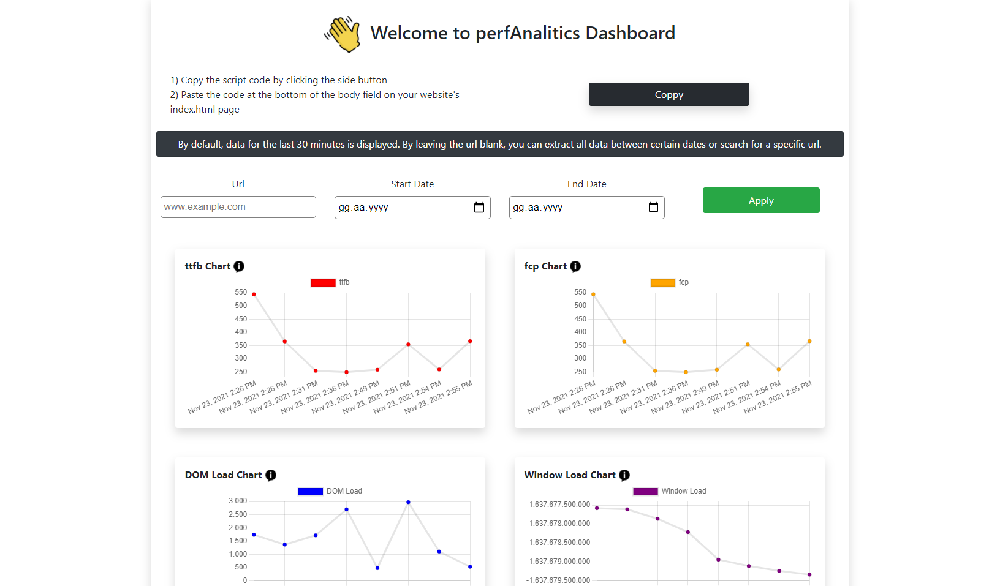

Web Perfromance Metrics
perfAnalitics is a web project that captures, captures and visualizes performance data of desired web applications.
perfAnalitics consists of three subsystems. These; perfAnalitics.js, perfAnalitics.api and perfAnalitics.dashboard
The project is kept on different platforms to be used free of charge for an unlimited period of time. Google Firebase Hosting was used for the Dashboard project, and Heroku, which is advanced in deployment processes and testing, was used for the API project.
To use the project, you can copy the script at https://perfanalitics.web.app/ by clicking the copy button. After adding this script to your website, the data will be kept in perfAnalitic DB. Mongo DB was used because a single schema is used in the project and I want fast querying. After adding the script code to your site, you can access your performance data by filtering the URL you added from https://perfanalitics.web.app/.
If you want to use the project in your local environment, you must write 'nodemon perfAnalitics.server.js' for the API project, and if you want to use the dashboard project, you must use the 'npm start' command.
PerfAnalitics API
BaseUrl: https://young-garden-19393.herokuapp.com
- Get/getMeasures -> Get measures with query parameters
- - url
- - startDate (milisecond)
- - endDate (milisecond)
- Post/sendMetrics -> Post website performance metrics
- - url
- - date (milisecond)
- - ttfb
- - fcp
- - domLoad
- - windowLoad
PerfAnalitics Script
Paste the code at the bottom of the body field on your website's index.html page
```html
```
It will pass the data to the site perfAnalitics.api
A script was added to the CabinFit project, which I made before and working on kigili.com. New data continues to be added.
### Dashboard
Dashboard written with React.
Bootstrap, axios, moment and a few more helpers used.
Url query and start-end date filters have been added so that anyone who adds the script to their site can use it.
To visit https://perfanalitics.web.app/
